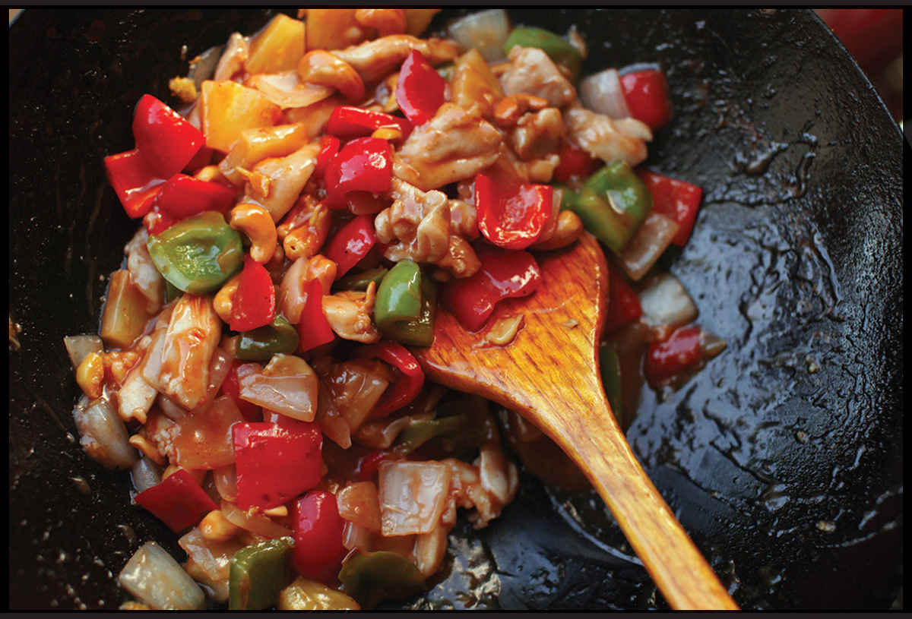

SWEET AND SOUR CHICKEN OR PORK
|
Yield Serves 4 Active Time 30 minutes Total Time 30 minutes |
For the most efficient process, get your chicken in the marinade first, chopping your vegetables, mincing aromatics, and mixing your sauce while it marinates. For this recipe canned pineapple with its juice works better than fresh. |
Depending on exactly what part of the United States you live in, you may know sweet and sour chicken in various forms. In a puffy batter with neon red sauce, perhaps. Or deep-fried until crisp and served with a sweet and vinegary glaze. The version I make is based on a recipe my old colleague Chris Chung used to make for staff meals when we worked together at Uni, a sashimi bar in Boston. Chris, a Honolulu-born Chinese chef, got his chops in various kitchens around Oahu, where he picked up this particular recipe. It’s got canned pineapples (and ketchup!) on the ingredients list. I think I can safely say that this is the only recipe I’ve ever written that includes canned pineapple.
INGREDIENTS
1 pound (450 g) boneless, skinless chicken breasts or thighs or pork loin, cut into ⅛-inch slices
1 teaspoon (3 g) kosher salt
2 teaspoons (10 ml) light soy sauce or shoyu
2 teaspoons (10 ml) Shaoxing wine or dry sherry
½ teaspoon (2 g) sugar
½ teaspoon (2 g) baking soda
1 large egg white
2 teaspoons (6 g) cornstarch
For the Sauce:
Juice from one 8- or 10-ounce (225 to 290 g) can pineapple chunks or rings
3 tablespoons (45 ml) ketchup
2 tablespoons (30 ml) distilled white or apple cider vinegar
1 teaspoon (5 ml) light soy sauce or shoyu
2 tablespoons (25 g) sugar
For the Cornstarch Slurry:
2 teaspoons (6 g) cornstarch
1 tablespoon (15 ml) water
For the Stir-Fry:
3 tablespoons (45 ml) peanut, rice bran, or other neutral oil
1 large red bell pepper, cut into ¾-inch dice
1 large green bell pepper, cut into ¾-inch dice
1 small white or yellow onion, cut into ¾-inch dice
4 medium garlic cloves, minced (about 4 teaspoons/10 g)
2 teaspoons (5 g) minced fresh ginger (about ½-inch segment)
Chunks from one 8- or 10-ounce can (225 to 290 g) pineapple or pineapple rings cut into chunks
1 cup cashews (optional)

DIRECTIONS
1For the Chicken: Place the chicken in a medium bowl, cover with cold water, and vigorously agitate it. Drain through a fine-mesh strainer set in the sink and press on the chicken with your hands to remove excess water. Combine the chicken, salt, soy sauce, wine, sugar, baking soda, egg white, and cornstarch in a medium bowl and stir vigorously with fingertips or chopsticks. Set aside for at least 15 minutes.
2For the Sauce: Combine the pineapple juice, ketchup, soy sauce, and sugar in a small bowl and stir together until homogenous. Set aside. Combine the cornstarch and water in a separate small bowl and stir with a fork until the cornstarch is dissolved.
3To Velvet the Chicken: Bring 1 quart (1 liter) water to a boil in a wok over high heat. Add the chicken, dropping it in a piece at a time to prevent sticking. Cook, stirring occasionally, until the water returns to a brief simmer and chicken is mostly cooked through, 30 to 60 seconds. Transfer the chicken to a rimmed baking sheet using a spider and spread it into a single layer to dry. Set aside. Dump out the contents of the wok and wipe clean.
4BEFORE YOU STIR-FRY, GET YOUR BOWLS READY:
5For the Stir-Fry: Rub a thin film of oil into a wok and set it over high heat until smoking. Add 2 tablespoons of the oil and swirl to coat. Add the bell peppers and onion and cook, stirring and tossing occasionally, until brightly colored and browned in spots, about 1 minute. Make a space in the center of the wok, add the remaining tablespoon of oil, then add the garlic and ginger and cook, stirring, until fragrant, about 30 seconds.
6Return the chicken to the wok. Add the pineapple chunks and cashews (if using). Stir the sauce and add to the wok by pouring it around the edges. Stir the cornstarch slurry and add a splash. Cook, tossing, until the sauce thickens and the chicken is cooked through, about 30 seconds longer. Adjust the sauce consistency with more cornstarch slurry if it is too thin or a splash of water if it is too thick. Transfer to a serving platter and serve immediately with steamed rice.